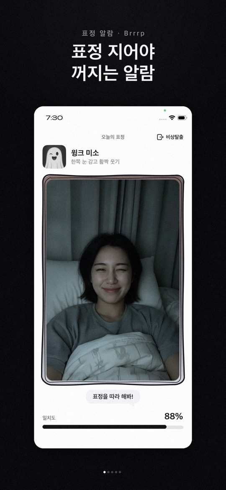
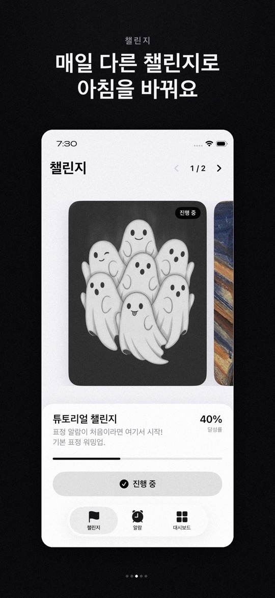
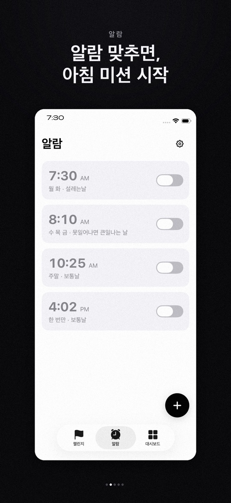
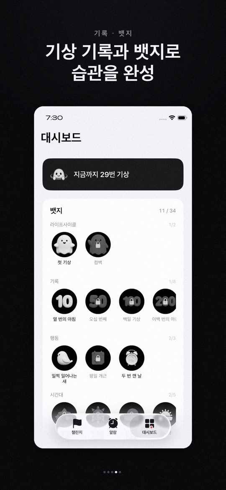

잠의 유령 Brrrp가 보여 주는 표정(아이폰은 손동작 포함)을 카메라 앞에서 똑같이 따라 해야 꺼지는 알람입니다. ‘끄기’ 버튼은 없고, 표정이 잘 안 될 때를 위한 비상탈출이 있습니다.
어떻게 동작하나요
- 알람이 울리면 오늘의 표정이 나옵니다. 카메라 화면 아래 일치도가 오르도록 표정을 지으면 알람이 꺼지고 ‘기상 완료’가 기록됩니다.
- 표정 인식은 기기 안에서만 처리되며, 얼굴·손 영상이나 데이터를 저장하거나 보내지 않는다고 두 스토어 모두 밝힙니다. 회원가입과 로그인도 없습니다.
- 얼굴이 잘 잡히지 않거나 시간이 오래 걸리면 화면 오른쪽 위의 비상탈출로 빠져나올 수 있습니다.
- 기상 기록은 대시보드에 쌓이고, 연속 기상·시간대·표정 숙련도 등에 따라 뱃지가 열립니다.
아이폰과 안드로이드의 차이
- App Store(버전 1.6, iOS 26.0 이상): AlarmKit 기반으로 무음·집중 모드에서도 울린다고 안내합니다. 반복 요일, 여러 알람, 알람음 선택을 지원하고 튜토리얼·명화 챌린지·K-pop 아이돌 챌린지(손하트·브이·아이돌 포즈)가 있으며, 알람이 없을 때도 챌린지 포즈를 연습할 수 있습니다.
- Google Play(2026년 9월 15일 업데이트): 무음 모드에서도 울리고, 재부팅해도 알람이 남고, 잠금화면 위로 바로 뜨며, 알람음 다섯 가지를 고를 수 있다고 안내합니다. 설명에 적힌 챌린지는 튜토리얼(쉬운 표정 10종)과 명화(10종)이며, 스토어 스크린샷에는 K-pop 아이돌 챌린지 카드도 보입니다.
- 앱의 아래쪽 탭은 두 스토어 스크린샷 모두 챌린지·알람·대시보드입니다.
처음 시작하기
- 아래 스토어 링크에서 설치합니다. 아이폰은 iOS 26.0 이상이 필요합니다.
- 카메라와 알림 등 앱이 요청하는 권한을 허용합니다. 표정을 인식하려면 앞 카메라가 필요합니다.
- 알람 탭에서 + 버튼으로 시간과 반복 요일을 정해 알람을 추가하고, 스위치로 켭니다.
- 챌린지 탭에서 튜토리얼 챌린지를 고르고, 아침이 되기 전에 표정을 미리 연습해 봅니다(아이폰은 알람 없이 연습 가능).
- 알람이 울리면 오늘의 표정을 보고 일치도가 찰 때까지 따라 합니다. 기록은 대시보드에서 확인합니다.
잘 쓰기 위한 참고 팁
아래는 스토어 설명과 화면 안내를 바탕으로 한 사용 제안입니다. 기상을 보장하는 앱은 아니며, 인식 결과는 조명과 기기에 따라 달라질 수 있습니다.
- 중요한 일정에는 보조 알람을 함께 두세요. 첫 며칠은 기본 시계 알람을 함께 맞춰 두고, 내 기기에서 무음·잠금 상태로 잘 울리는지 확인하세요.
- 얼굴이 보이는 자리에 휴대폰을 두세요. 너무 어두우면 표정이 잘 잡히지 않을 수 있습니다. 머리맡 조명이나 화면 밝기를 확인해 보세요.
- 튜토리얼부터 시작하세요. 튜토리얼 챌린지는 표정 알람이 처음인 사람을 위한 기본 표정 모음입니다.
- 비상탈출은 진짜 비상일 때만. 알람을 끝내는 방법이 있다는 걸 알아 두되, 습관처럼 누르면 표정 미션의 의미가 줄어듭니다.
- 앱을 최신으로 유지하세요. 1.6 업데이트(App Store)는 알람이 울린 뒤 미션 화면이 뜨지 않거나 곧바로 꺼지던 문제를 고쳤다고 밝힙니다.
스크린샷
App Store 한국 스토어에 게시된 공식 홍보용 스크린샷입니다(버전 1.6 기준, 홍보 문구 포함). 안드로이드 화면은 다를 수 있습니다.




자주 묻는 질문
- 표정이 아무리 해도 인식되지 않아요.
- 얼굴이 잡히지 않거나 시간이 오래 걸리면 비상탈출로 빠져나올 수 있습니다. 조명과 휴대폰 위치를 바꿔 보고, 문제가 계속되면 기기 모델과 함께 알려 주세요.
- 제 얼굴 사진이 저장되나요?
- 두 스토어 설명 모두 표정 인식은 기기 안에서만 처리되고, 사진·영상·얼굴 데이터를 저장하거나 전송하지 않는다고 밝힙니다.
- 무음 모드에서도 울리나요?
- 두 스토어 모두 무음 모드에서도 울린다고 안내합니다(아이폰은 집중 모드 포함, AlarmKit 기반). 실제 동작은 기기 설정에 영향을 받을 수 있으니 처음에는 직접 확인해 주세요.
- 예전 아이폰에서 설치가 안 돼요.
- App Store 버전 1.6은 iOS 26.0 이상이 필요합니다.
- 버그는 어떻게 알리나요?
- 상황을 적어 ricecookey.help@gmail.com으로 보내 주세요. 기기 모델, OS 버전, 앱 버전을 함께 적어 주시면 확인이 빠릅니다.
스토어 링크
무료 앱
iOS 26.0 이상, 연령 등급 4+(App Store 기준). 확인 당시 Google Play 페이지에는 광고 포함·인앱 구매 표시가 없었지만, 안드로이드 공식 스크린샷에는 K-pop 아이돌 챌린지를 ‘광고 보고 잠금해제’하는 버튼이 보입니다.
문의
질문, 요청, 버그 제보: ricecookey.help@gmail.com
참고 자료와 확인 범위
- App Store 페이지 — 버전 1.6(2026년 9월 15일 배포), 설명·업데이트 내용·스크린샷
- Google Play 페이지 — 2026년 9월 15일 업데이트, 설명과 스크린샷
기능과 메뉴 이름은 2026년 10월 20일에 확인한 스토어 설명과 공식 스크린샷 문구를 따랐습니다. 업데이트로 달라질 수 있으며, 앱 안의 표시가 이 페이지보다 우선합니다.
English
Brrrp is an alarm that only stops when you copy the face (and, on iPhone, hand poses) that the sleep ghost Brrrp shows you, in front of the camera. There is no Off button, but there is an Emergency Exit for when a face won't register.
How it works
- When the alarm rings you get today's face. Make the face until the match bar under the camera view fills; the alarm stops and the wake-up is logged.
- Both stores state that face recognition runs on the device only, and that no face or hand video or data is saved or sent. There is no sign-up or login.
- If your face isn't detected or it takes too long, use Emergency Exit (비상탈출) at the top right.
- Wake-ups build up on the dashboard, and badges unlock for streaks, time of day, face skill and more.
iPhone and Android differences
- App Store (version 1.6, iOS 26.0 or later): built on AlarmKit and described as ringing in Silent and Focus modes. It supports repeat days, multiple alarms and alarm sounds, offers Tutorial, Masterpiece and K-pop Idol challenges (finger heart, V sign, idol poses), and lets you practise challenge poses without an alarm.
- Google Play (updated September 15, 2026): described as ringing in silent mode, surviving reboots, appearing over the lock screen, with five alarm sounds. Its description lists Tutorial (10 easy faces) and Masterpiece (10) challenges, while its screenshots also show a K-pop Idol challenge card.
- Both stores' screenshots show the same bottom tabs: Challenges, Alarms and Dashboard (챌린지·알람·대시보드).
Getting started
- Install from the store links below. iPhone needs iOS 26.0 or later.
- Allow the permissions the app asks for, such as camera and notifications. The front camera is needed to read your face.
- In the Alarms tab, tap + to add an alarm with a time and repeat days, then switch it on.
- In Challenges, pick the Tutorial challenge and practise faces before morning (on iPhone you can practise without an alarm).
- When the alarm rings, copy today's face until the match bar fills. Check your history in the Dashboard.
Tips for using it well
These suggestions are based on the store descriptions and on-screen text. The app does not guarantee you will wake up, and recognition can vary with lighting and device.
- Keep a backup alarm for important days. For the first few days, also set your phone's built-in alarm and check that Brrrp rings on your device while silent and locked.
- Place the phone where it can see your face. Faces may not register in a very dark room. Check your bedside light or screen brightness.
- Start with the Tutorial. The Tutorial challenge is a set of basic faces for first-time users.
- Save Emergency Exit for real emergencies. It's good to know it exists, but using it out of habit defeats the face mission.
- Keep the app updated. The 1.6 App Store notes say it fixed the mission screen not appearing, or the alarm stopping right away, after it rang.
Screenshots
Official promotional screenshots from the Korean App Store (version 1.6, with marketing captions in Korean). Android screens may differ.
FAQ
- My face just won't register.
- If your face isn't detected or it takes too long, use Emergency Exit. Try different lighting and phone placement, and if it keeps happening, tell us your device model.
- Are photos of my face stored?
- Both store descriptions say recognition happens only on the device, and photos, video and face data are not saved or sent.
- Does it ring in silent mode?
- Both stores say it does (on iPhone, Focus modes too, via AlarmKit). Device settings can still affect it, so check it yourself at first.
- It won't install on my older iPhone.
- App Store version 1.6 requires iOS 26.0 or later.
- How do I report a bug?
- Describe what happened to ricecookey.help@gmail.com. Including your device model, OS version and app version speeds things up.
Store links
Free app
Requires iOS 26.0 or later, rated 4+ (App Store). When checked, the Google Play page showed no Contains ads or In-app purchases label, but its official Android screenshot shows a “watch an ad to unlock” button for the K-pop idol challenge.
Contact
Questions, requests and bug reports: ricecookey.help@gmail.com
References and scope
- App Store listing — version 1.6 (released September 15, 2026), description, release notes and screenshots
- Google Play listing — updated September 15, 2026; description and screenshots
Features and menu names follow the store descriptions and official screenshot text checked on October 20, 2026. Updates may change them, and what the app shows takes precedence over this page.